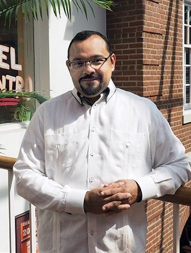

My Professor
One degree requirement for communications majors is successfully completing the visual media class. This semester, I am taking visual media with Dr. Carlos Evia. Dr. Evia earned his Ph.D. from Texas Tech University. Prior to studying at Texas Tech, Dr. Evia completed his undergraduate and masters degree in Mexico. Throughout his professional career, Dr. Evia has made strides in communications studies and rightfully earned high accomplishments. Dr. Evia currently works for the communications department at Virginia Tech. Dr. Evia has multiple publications including a book, various articles, and sponsored research. In May 2017, Dr. Evia won the Frank R. Smith Award for Distinguished Article in the Journal of Technical Communication. Dr. Evia is married and has a little girl named Sophia.
About the Course
With Dr. Evia leading the visual media course, our class has crucial communication skills. Since our class is small, we have all gotten to know each other's names and frequently have friendly conversations. This course applies to all of the different sections of communications studies, such as public relations. One goal of visual media introduce the skills that are required of communication majors. To study the skills in communications, Dr. Evia divided the class into four separate modules. Creating separate modules helps students focus on one area of communications at a time. I like this style of learning because if a module is too overwhelming, or if you don’t like a particular unit, it will be done in a couple of weeks.
